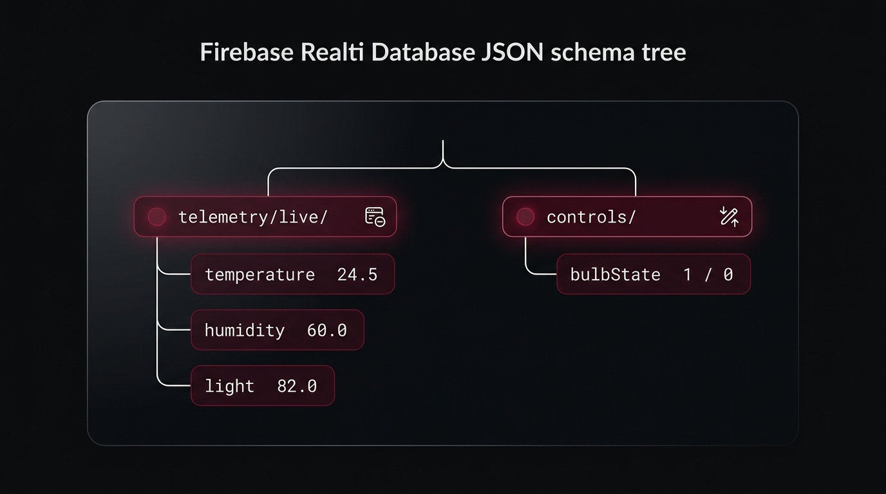
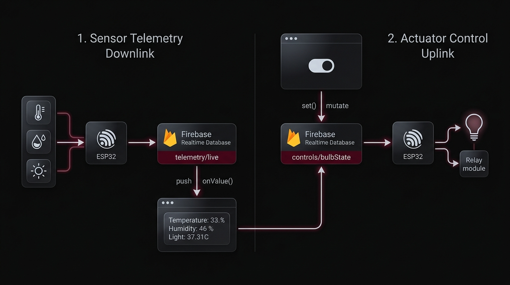
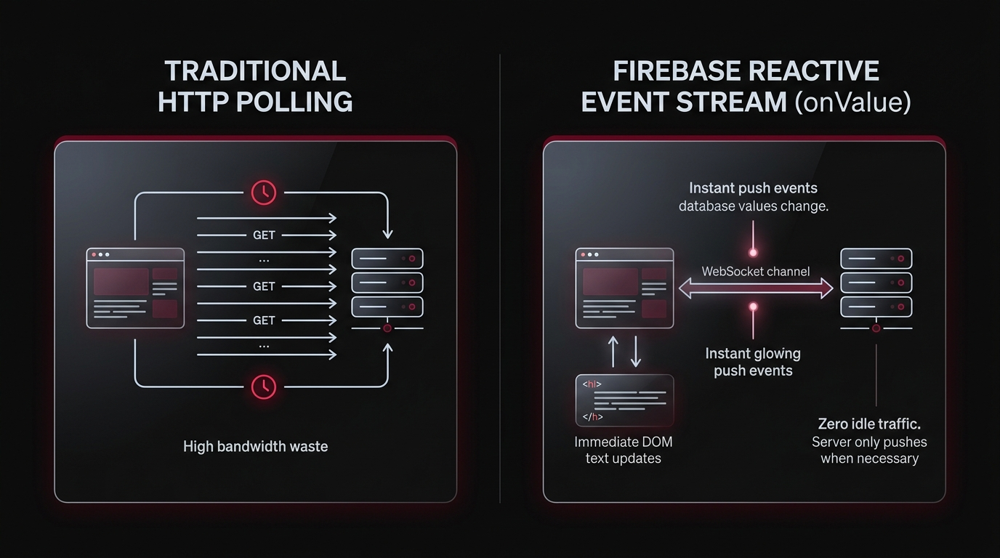
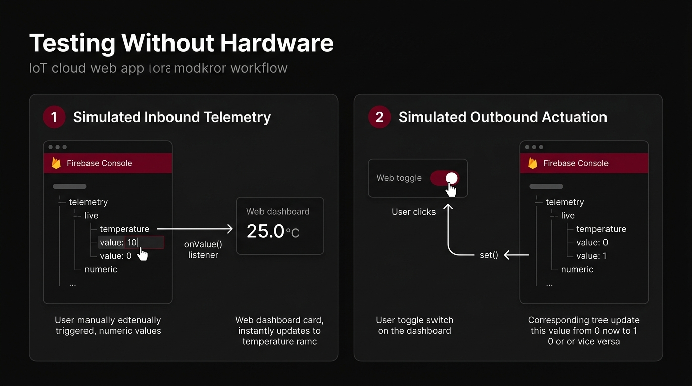
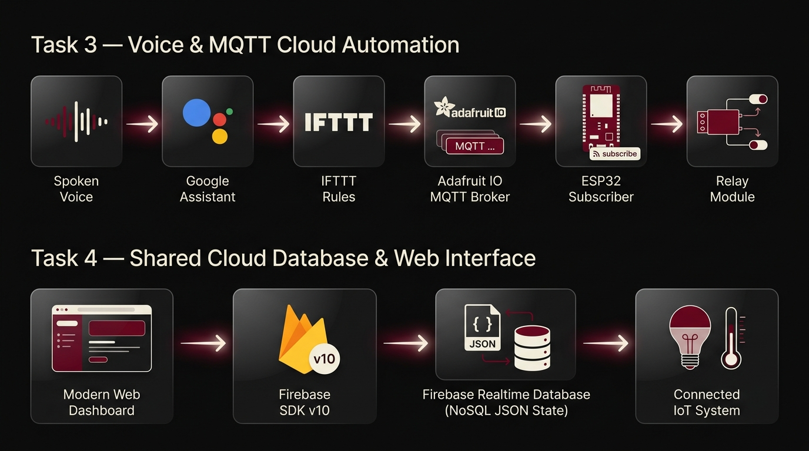
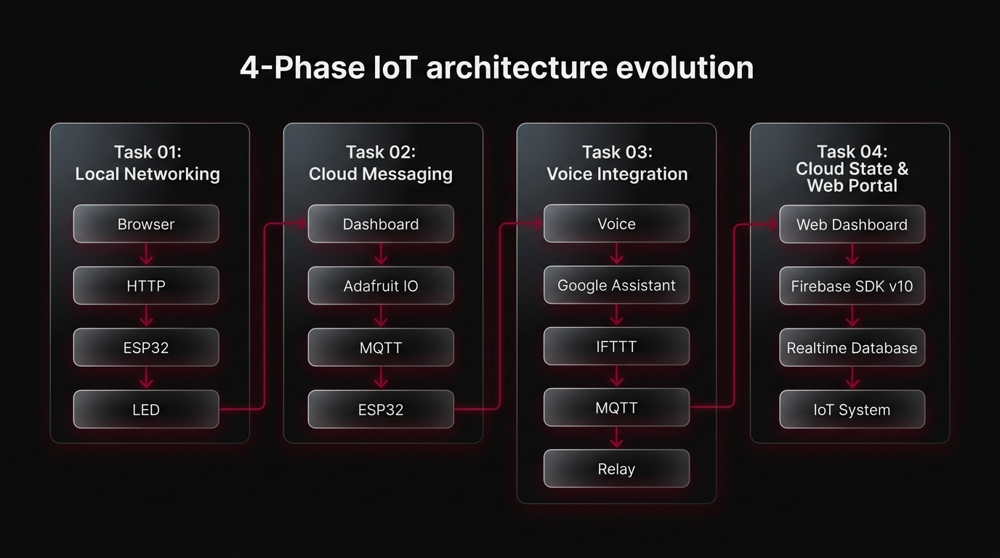

Task 04: Firebase Realtime Web Dashboard
A decoupled, browser-based telemetry portal and actuator control engine powered by Firebase Realtime Database. Eliminates client-side HTTP polling through persistent WebSocket event subscriptions, maintaining continuous state parity between web DOM elements and physical IoT microcontrollers.
1. Overview
The purpose of Task 04 was to engineer a browser-based IoT monitoring and control dashboard powered by Firebase Realtime Database and deployed globally via Firebase Hosting.
The web application displays real-time ambient telemetry—specifically Temperature, Humidity, and Light Level—and provides a real-time binary toggle switch for an electrical Bulb. Rather than forcing the browser to maintain a fragile peer-to-peer connection with embedded microcontroller silicon, the frontend connects directly to Firebase using the official Firebase JavaScript SDK v10.

onValue() event listeners to render incoming environmental values without page refreshes.2. What I Was Trying to Build
The engineering objective was to eliminate direct hardware coupling. Instead of requiring a client to know the ESP32's local IP address or maintain an open socket directly to an embedded web server, the user interacts seamlessly through a shared cloud state repository:
set() mutation → Cloud writes 1 or 0 → Hardware subscriber catches event and switches relay.3. Learning Objectives
initializeApp, getDatabase, ref, onValue, set).onValue() event pushes to update the browser DOM instantly without HTTP polling loops.4. Web Dashboard Architecture & DOM Binding
The frontend client architecture uses standard semantic HTML elements bound deterministically to Firebase reactive listeners:

telemetry/live/temperature. Updated immediately upon snapshot arrival via document.getElementById("temp").textContent.telemetry/live/humidity. Renders relative atmospheric humidity percentages dynamically without UI flickering.telemetry/live/light. Displays mapped percentage light values derived from hardware photoresistor voltage dividers.onValue updates checked property; change event listener dispatches set(bulbRef, 1 / 0).5. Firebase Database Structure
The database schema is organized as a shallow, deterministic JSON hierarchy partitioning read-only telemetry from write-enabled control parameters:

temperature, humidity, light). Consumed by the web dashboard as read-only event streams. Written exclusively by microcontroller firmware.
1 = ON, 0 = OFF). Mutated by the dashboard toggle switch and consumed by the ESP32 relay driver.
6. Complete Data Flow Pipeline
The system maintains two independent, non-interfering data streams across the shared cloud database:

telemetry/live → Firebase broadcasts over WebSocket → onValue() unblocks → DOM text nodes update.change event fires → set(bulbRef, 1 or 0) mutates database → Cloud updates controls/bulbState → Hardware listener catches event → Relay switches AC load.7. Reactive Event Streaming vs HTTP Polling
Traditional web architectures often query REST APIs using periodic setInterval() polling loops. This approach incurs heavy HTTP header overhead, wastes mobile client bandwidth, and produces choppy, delayed UI rendering.

8. Testing Without Hardware
A major architectural breakthrough in Task 4 was the ability to validate the entire web frontend and cloud data tier in isolation before integrating physical embedded circuitry:

26.8 → DOM span reflects 26.8 without refresh.65.2 → Humidity card updates immediately.45.0 → Light level displays 45% accurately.1 → Checkbox automatically flips to checked state.0 → Checkbox automatically unchecks.9. Cloud Paradigm Progression: Task 3 vs Task 4
Comparing the transition from chained third-party voice automations to a direct, cloud-hosted real-time database state engine:

| Dimension | Task 3 — Voice & Cloud Automation | Task 4 — Firebase Web Dashboard |
|---|---|---|
| Primary User Interface | Acoustic Spoken Voice (Google Assistant) | Graphical Web Dashboard (Browser) |
| Input Modality | Smartphone Microphone Utterances | Interactive Desktop & Mobile Web Controls |
| Integration Engine | IFTTT Rules Engine Automation | Modular Firebase JavaScript SDK (v10) |
| Cloud Intermediary | Adafruit IO (MQTT Broker) | Firebase Realtime Database (NoSQL JSON) |
| Communication Pattern | Publish-Subscribe over Port 1883 | WebSocket Event Synchronization |
| State Storage | Transient Topic Queue | Persistent JSON Database Tree |
10. Demonstration Media
Photographic verification of the Firebase Realtime Database cloud console, production web dashboard UI, and live state synchronization:


11. Complete Frontend Source Code
<!DOCTYPE html>
<html lang="en">
<head>
<meta charset="UTF-8">
<meta name="viewport" content="width=device-width, initial-scale=1.0">
<title>Smart IoT Dashboard</title>
</head>
<body>
<h1>Smart IoT Dashboard</h1>
<p>Temperature: <span id="temp">--</span> °C</p>
<p>Humidity: <span id="hum">--</span> %</p>
<p>Light level: <span id="light">--</span> %</p>
<label><input type="checkbox" id="bulbToggle"> Bulb</label>
<script type="module">
import { initializeApp } from "https://www.gstatic.com/firebasejs/10.12.0/firebase-app.js";
import { getDatabase, ref, onValue, set } from "https://www.gstatic.com/firebasejs/10.12.0/firebase-database.js";
const firebaseConfig = {
apiKey: "YOUR_API_KEY",
authDomain: "YOUR_PROJECT.firebaseapp.com",
databaseURL: "https://YOUR_PROJECT-default-rtdb.firebaseio.com",
projectId: "YOUR_PROJECT"
};
const app = initializeApp(firebaseConfig);
const db = getDatabase(app);
const telemetryRef = ref(db, "telemetry/live");
const bulbRef = ref(db, "controls/bulbState");
// Live sensor values
onValue(telemetryRef, (snapshot) => {
const d = snapshot.val();
if (!d) return;
document.getElementById("temp").textContent = d.temperature;
document.getElementById("hum").textContent = d.humidity;
document.getElementById("light").textContent = d.light;
});
// Keep the toggle in sync with the database
onValue(bulbRef, (snapshot) => {
document.getElementById("bulbToggle").checked = snapshot.val() === 1;
});
// Send the toggle change to the database
document.getElementById("bulbToggle").addEventListener("change", (e) => {
set(bulbRef, e.target.checked ? 1 : 0);
});
</script>
</body>
</html>12. Code Breakdown & Modular API Architecture
initializeApp(firebaseConfig)getDatabase(app)ref)telemetry/live and controls/bulbState.onValue)snapshot.val())temperature, humidity, and light.set)1 or 0), committing mutations to the cloud database.13. Implementation Process
firebaseConfig credentials.telemetry/live and controls/bulbState.index.html with sensor display cards and bulb toggle checkbox, importing modular Firebase SDK v10 scripts.onValue() listeners to extract incoming temperature, humidity, and light readings, updating DOM targets directly.change event listener to the checkbox, executing set(bulbRef, checked ? 1 : 0) on user interaction.firebase deploy --only hosting to production.14. Key Learnings
onValue) slashes network bandwidth while delivering instantaneous UI updates.15. Final Result & Engineering Takeaway
Task 04 successfully delivered a fast, responsive, and robust cloud-connected web portal:
1 or 0 directly to the database. The entire client application is hosted on Google's edge infrastructure at Smart Home Dashboard.
Core Takeaway: The value of Task 04 lies in decoupling user interfaces from embedded hardware using cloud databases as shared state abstractions. Neither tier needs to understand the internal mechanisms of the other: the browser does not need to know GPIO pin mappings, and the microcontroller does not need to know DOM structures. Firebase serves as the universal synchronization layer.
16. The 4-Phase IoT Architecture Evolution Arc
Task 04 represents the software culmination of four progressive architectural milestones across IoT Week:
